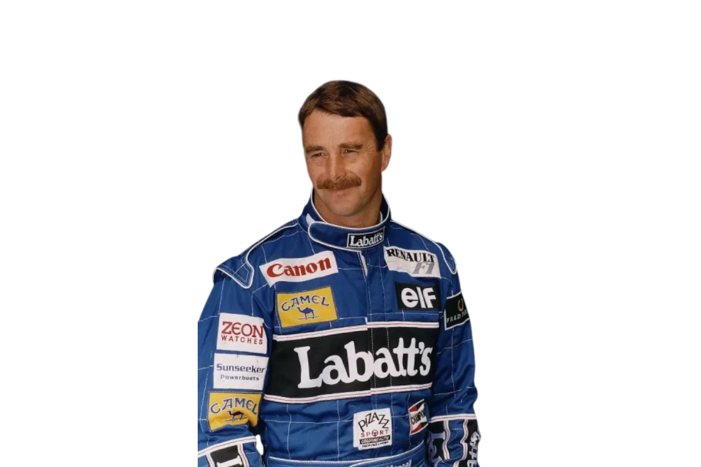

Legacy. Innovation. Pure Racing.
Williams Racing is one of the most iconic teams in Formula 1 history. Founded in 1977 by Sir Frank Williams, the team became synonymous with engineering excellence, legendary drivers, and championship success.
Williams Racing enters Formula 1.
Multiple Constructors’ and Drivers’ Championships.
Dominant season with Nigel Mansell.
Rebuilding era focused on long-term success.

Nigel Mansell is a Williams F1 icon and the 1992 World Champion.
Fernando Alonso is a legendary Formula 1 driver known for his exceptional talent and experience.